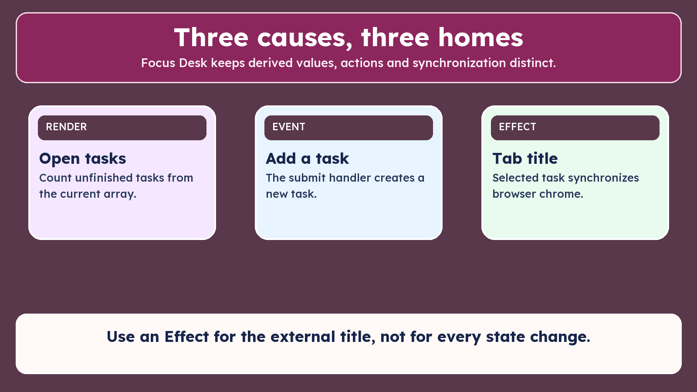
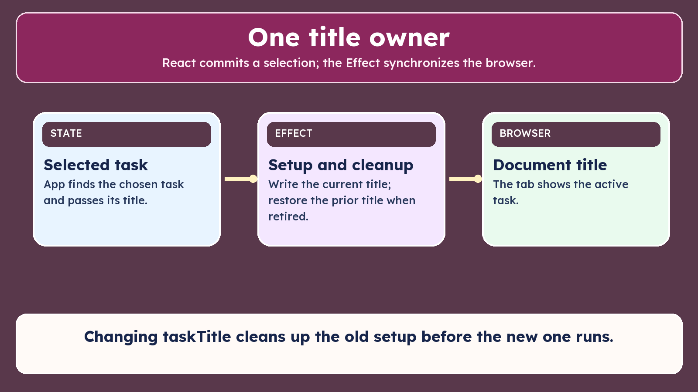

Use the matching focus-desk source checkpoint while reviewing the lesson.

Use an Effect for the external title, not for every state change.

Changing taskTitle cleans up the old setup before the new one runs.